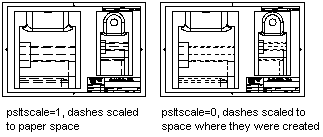

Autodesk AutoCAD 2021: ActiveX Developer's Guide > Define and Plot Layouts > About Viewports (VBA/ActiveX) >
In paper space, you can scale any type of linetype in two ways. The scale can be based on the drawing units of the space in which the object was created (model or paper).
The linetype scale also can be a uniform scale based on paper space units. You can use the PSLTSCALE system variable to maintain the same linetype scaling for objects displayed at different zoom scales in different viewports. It also affects the line display in 3D views.
In the following illustration, the pattern linetype of the lines in model space is scaled uniformly in paper space by the PSLTSCALE system variable. Notice that the linetype in the two viewports has the same scale, even though the objects have different zoom scales.

Use the SetVariable method to set the value of the PSLTSCALE system variable.